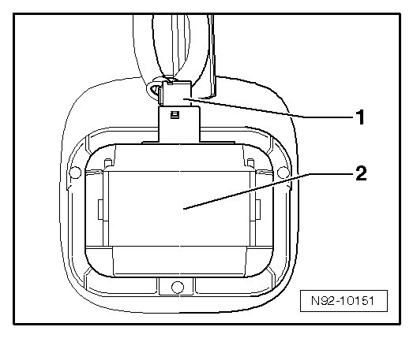
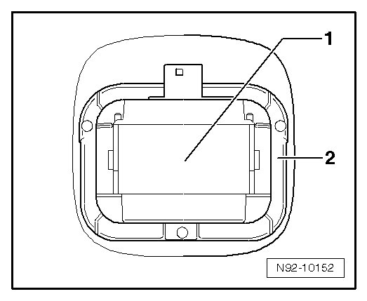

Ambient Light Sensor: Service and Repair
Rain Sensor or Rain/Light Recognition Sensor
• Removing and installing Rain Sensor (G213) and Rain/Light Recognition Sensor (G397) is identical.
• Depending on vehicle equipment (windshield tint), different sensors are installed.
Removing
- Switch off ignition, switch off all electrical consumers and remove ignition key.
- Remove interior mirror --> Body Interior 68 Removal and Installation.
- Disconnect harness connector - 1 - from Rain Sensor (G213) or Rain/Light Recognition Sensor (G397) - 2 -.

- Using e.g. a screwdriver, pry Rain Sensor (G213) or Rain/Light Recognition Sensor (G397) - 1 - out of bracket - 2 -.

• When removing, make sure to pry off complete Rain Sensor (G213) or Rain/Light Recognition Sensor (G397) and not only the upper casing of Rain Sensor (G213) or of Rain/Light Recognition Sensor (G397).
Installing
Install in reverse order of removal, noting the following:
• Always clean windshield surface inside bracket for Rain Sensor (G213) or Rain/Light Recognition Sensor (G397) before installing.
• Surface (connecting pads) of Rain Sensor (G213) or Rain/Light Recognition Sensor (G397) must not be soiled when installing.
• If the surface (connecting pads) of Rain Sensor (G213) or Rain/Light Recognition Sensor (G397) is soiled, it may be possible to clean it by "applying" and then "removing" one or more adhesive strips.
• After installing Rain Sensor (G213) or Rain/Light Recognition Sensor (G397), there must be no air bubbles between windshield and surface (connecting pads).